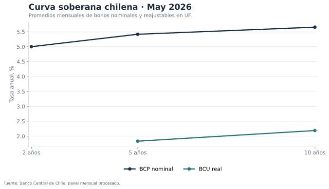
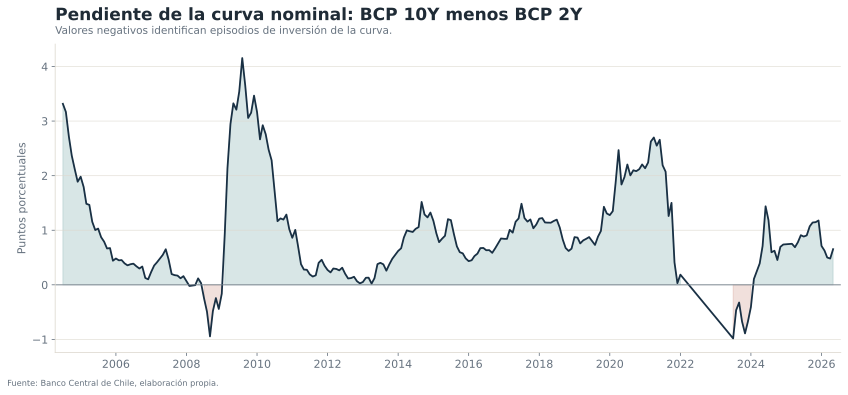
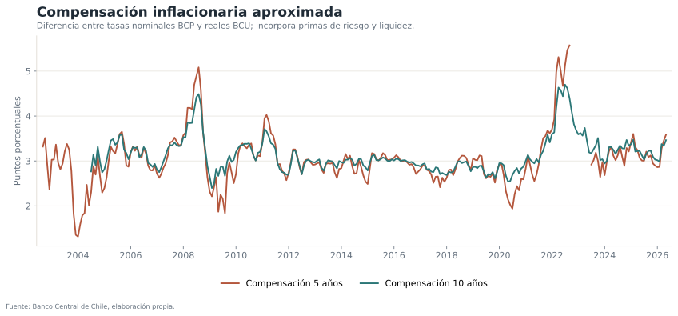

Qué permite estudiar la curva
La estructura temporal de tasas resume información sobre la trayectoria esperada de la política monetaria, primas por plazo, inflación, riesgo y liquidez. El monitor publica tres lecturas complementarias:
- Nivel de la curva nominal y real.
- Pendiente 10Y–2Y de la curva nominal.
- Compensación inflacionaria aproximada a 5 y 10 años.
Curva vigente

Explorador histórico
Pendiente de la curva

La pendiente combina expectativas de política, primas por plazo y cambios en oferta y demanda de instrumentos. Por ello su lectura debe complementarse con actividad, inflación y condiciones externas.
Compensación inflacionaria

Datos y construcción
Las series provienen del panel mensual de tasas utilizado en el proyecto de transmisión de la TPM. Se calculan promedios mensuales y se conservan únicamente fechas con información simultánea para las curvas mostradas.
No se interpola una curva continua ni se estima una función Nelson–Siegel. La visualización conecta nodos observados para mantener transparente el contenido informativo de los datos.
Límites de interpretación
- BCP y BCU no son instrumentos idénticos en liquidez y composición de tenedores.
- La compensación inflacionaria no es una expectativa pura.
- La pendiente depende de primas por plazo y no solo de expectativas de TPM.
- Los promedios mensuales suavizan movimientos intradía y episodios breves.
- La ausencia de nodos de 1 y 3 años limita la forma observable de la curva.